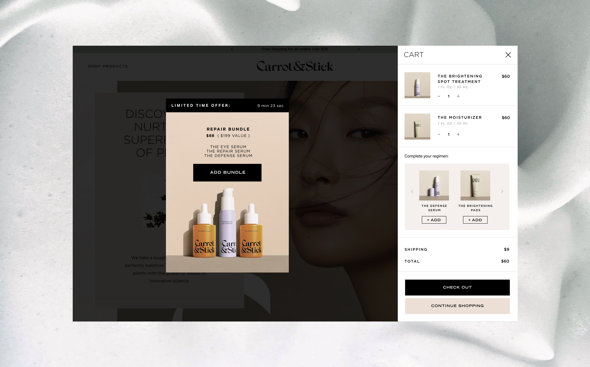
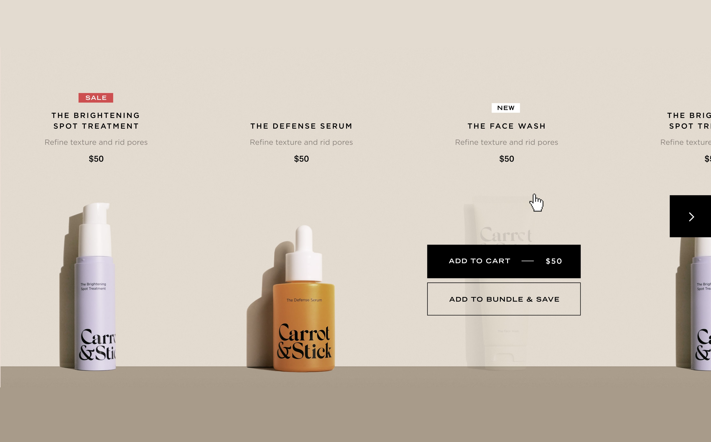
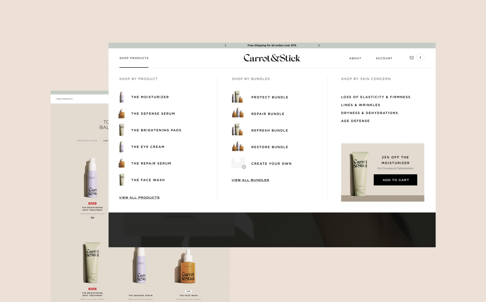
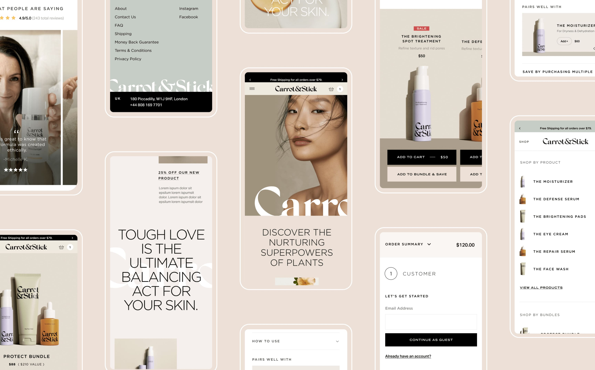
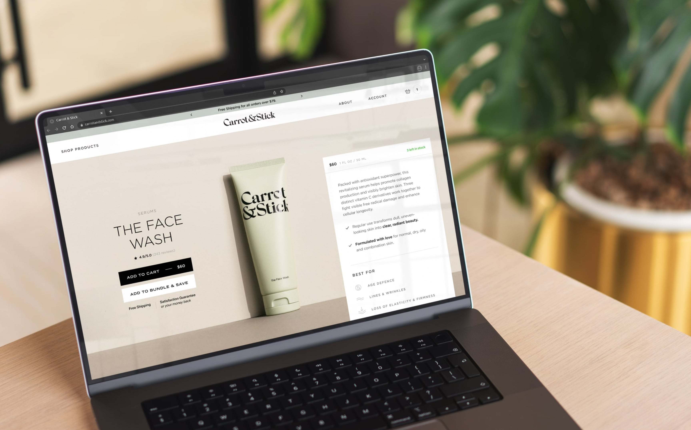

Carrot & Stick
E-commerce website redesign optimized for conversion.
/ 2022
Visual Design, Web Design, UX





Client
Carrot & Stick
CEO
Samuel Francis
Donjiro Ban
Creative Director
E-commerce Web Design
Jae Yoon Studio